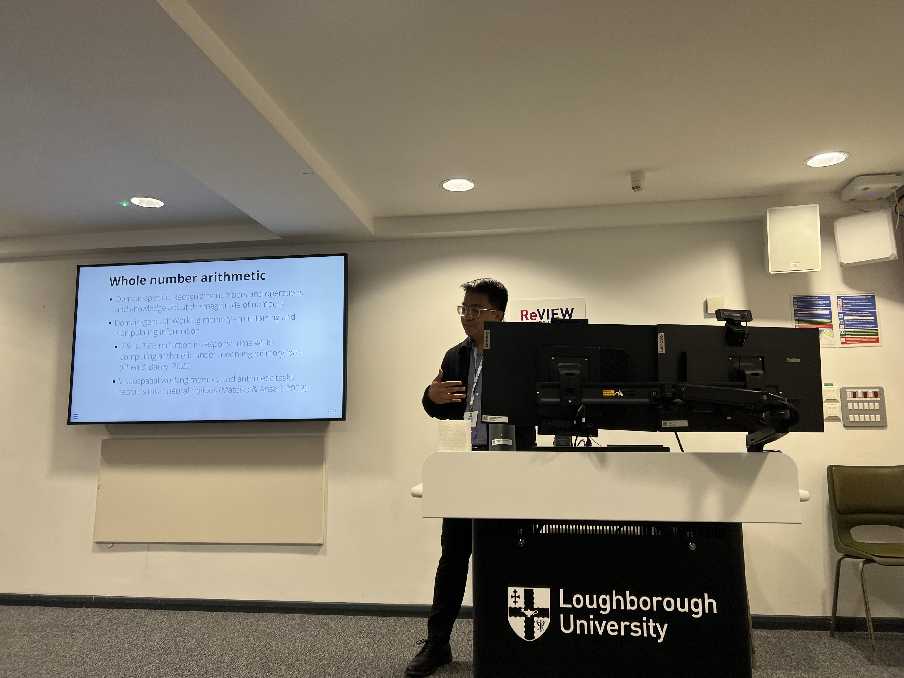

Posters & Presentations
Conference Presentations
Chaired Symposium
Medrano, J. (Chair). The role of perception in arithmetic cognition [Symposium]. 2023 Mathematical Cognition and Learning Society Conference, Loughborough, UK.

Invited Oral Presentations
Medrano, J. & Prather, R.W. (2023, June). Why does inhibitory control only sometimes associate with math? Insights from a review of executive function development research. In Hochman, S. (Chair). Numerical Cognition Meets Executive Functions Symposium [Symposium]. University of Surrey, Guildford, UK.
Medrano, J. & Prather, R.W. (2023, June). Integrating perceptual and cognitive processes in mental arithmetic. In Medrano, J. (Chair). The role of perception in arithmetic cognition [Symposium]. 2023 Mathematical Cognition and Learning Society Conference, Loughborough, UK.
Prather, R.W., & Payne-Sturges, D., Medrano, J., Kendall Brooks, L., Johnson, C., & Crnosija, N. (2022, March). An asset-based quantitative framework to characterize cognitive development of African-American children. In Rittle-Johnson, B. (Chair). Barriers and supports for cognitive development and academic outcomes among marginalized youth. Bi-ennial Cognitive Development Society Conference 2022, Madison, WI.
Chen, R.*, Diallo, M.*, Hancock, M.*, Lampe, L.*, Medrano, J.*, Salt, J.*, & Wright, J.* (2019). Motivation analysis of a multiage classroom: Exploring Agnor-Hurt Elementary. The Virginia Chapter of Association for Learning Environments Annual Conference, Williamsburg, VA.
*Presenters contributed equally.
Oral Presentations
Medrano, J.*, Crnosija, N.*, Prather, R.W., & Payne-Sturges, D., (2022). Bridging the environment and neurodevelopment for children’s health study: An overview. GradTerp Exchange, College Park, MD.
Medrano, J. & Prather, R.W. (2021, March). Examining how numerical and non-numerical inhibitory control contribute to arithmetic skills: A path analytical approach. 2021 Mathematical Cognition and Learning Society Conference.
Paper Presentations
Medrano, J.,Mohan, S., Jaffe, J.B., & Lombardi, D. (2021, August). Executive functions in plausibility judgments and scientific evaluations [Paper Presentation]. 31st Annual Meeting of the Society for Text and Discourse.
Poster Presentations
Parrish, L.U, Medrano, J., & Miller-Cotto, D. (2024, April). Whole number knowledge correlates with working memory and fraction understanding. [Poster Presentation]. 2024 Undergraduate Symposium for Research, Scholarship and Creative Endeavors, Kent State University, Kent, OH.
*** Poster Judged First Place Among Psychological Sciences Posters
Ernst, L.U, Medrano, J., & Miller-Cotto, D. (2024, April). Understanding the underlying cognitive mechanisms of whole number bias in third graders. [Poster Presentation]. 2024 Undergraduate Symposium for Research, Scholarship and Creative Endeavors, Kent State University, Kent, OH.
Medrano, J., Miller-Cotto, D., Thompson, C.A., Devlin, B., & Shingledecker, M. (2024, March). Individual differences in third and sixth graders’ fraction understanding and relations to EF and spatial skills. [Poster Presentation]. 2024 Bi-ennial Cognitive Development Society Conference, Pasadena, CA.
Crnosija, N., Medrano, J., Prather, R.W., & Payne-Sturges, D. (2022, September). The effect of COVID-19 lockdown/post-lockdown and season on children’s exposure to PM2.5 and time expenditure by environment type [Poster Presentation]. 34th Annual Conference of the International Society for Environmental Epidemiology, Athens, Greece. https://doi.org/10.1289/isee.2022.P-0519.
Medrano, J., Crnosija, N., Prather, R.W., & Payne-Sturges, D. (2022, March). Bridging the environment and neurodevelopment for children’s health study: An overview [Poster Presentation]. Bi-ennial Cognitive Development Society Conference 2022, Madison, WI.
Dobaria, A., Bailey, J. M., Mohan, S., Klavon, T. G., Medrano, J. R., Jaffe, J. B., & Lombardi, D. (2021, August). Students’ scientific evaluations of astronomy concepts[Poster Presentation]. EARLI 2021—the 19th Biennial EARLI Conference, Gothenburg, Sweden.
Crnosija, N.*, Medrano, J.*, Prather, R.W., & Payne-Sturges, D., (2021, August). Bridging the environment and neurodevelopment for children’s health study: An overview [Poster Presentation]. Eighth Annual Public Health Research, College Park, MD.
Mohan, S., Medrano, J., Lombardi, D., & Jaffe, J. (2021, August). Students’ evaluations, plausibility perceptions, and knowledge shifts about climate change and water resources [Pre-recorded Poster Presentation]. 2021 Annual Meeting of the American Educational Research Association, San Diego, CA.
Medrano, J. & Prather, R. W. (2021, April). Consistency of individual differences across number line tasks[Poster Presentation]. Society for Research in Child Development 2021 Virtual Biennial Meeting.
Jaffe, J.,* Medrano, J.,* & Lombardi, D. (2020, August). Promoting scientific plausibility and knowledge shifts through modeled evaluation activities [Poster Presentation]. American Psychological Association Convention 2020, Washington, D.C.
** Poster Selected for Presidential Poster Session
Medrano, J. & Prather, R. W. (2020, June). Cognitive, behavioral, and affective influences of mathematical achievement[Conference Canceled]. 2020 Mathematical Cognition and Learning Society Conference, Dublin, Ireland.
Medrano, J.,* Jaffe, J.,* & Lombardi, D. (2020, April). Does the evidence support the model? Examining the effectiveness of two instructional scaffolds in science classrooms [Conference Canceled]. 30th Annual Meeting of the Society for Text and Discourse, Atlanta, GA.
Medrano, J. & Jirout, J. (2019, October). The role of relative magnitude reasoning in space-math relations[Poster Presentation]. Bi-ennial Cognitive Development Society Conference 2019, Louisville, KY.
Medrano, J. & Jirout, J. (2019, March). Thinking relatively: The role of magnitude in mathematical and spatial thinking [Poster Presentation]. 10th Curry Research Conference, Charlottesville, VA.
*Presenters contributed equally.
U Undergraduate Mentee
Invited Departmental Talks
Medrano, J. (2024, May). Examining specific cognitive processes during arithmetic: The roles of inhibitory control and working memory. University of Pittsburgh, Kid’s Thinking Lab.
Medrano, J. (2024, April). Examining specific cognitive processes during arithmetic: The roles of inhibitory control and working memory. University of Notre Dame, Cognition, Brain, and Behavior Group Brown Bag.
Medrano, J. (2023, October). Examining how numerical and non-numerical inhibitory control contribute to arithmetic skills: A path analytical approach. Kent State University Cognitive Brown Bag.